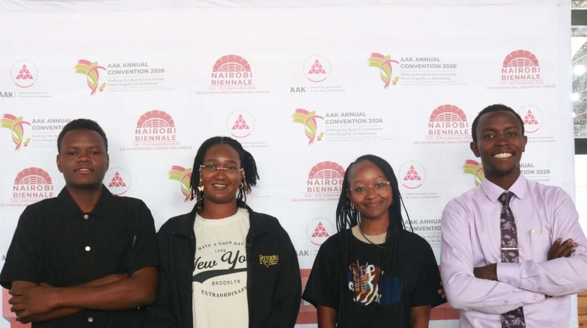

Vision
To be the leading national platform for architecture students and graduate architects that promotes excellence, innovation, leadership and professionalism.
THE NATIONAL NETWORK FOR ARCHITECTURE STUDENTS
Architecture students.
One national network.
A meeting point for emerging designers, university chapters and the built environment.

ASA Kenya is the umbrella body representing architecture students and graduate architects in Kenya. Each member university keeps its own identity, leadership and activities. ASA Kenya is the connector.

To be the leading national platform for architecture students and graduate architects that promotes excellence, innovation, leadership and professionalism.
To unite architecture students and graduate architects through mentorship, professional development, advocacy, research, networking and collaboration while bridging the gap between academia and professional practice.
Term shown on the source material: September 2026 to September 2027. Governance structure and constitution: link to be added.
ASA KENYA / NATIONAL CONNECTIONS
A national community of architecture students, university associations and emerging professionals — connected through shared ideas, opportunities and action.
Select a node to explore an association. Map positions are illustrative; institution locations are shown in each profile.
02 / THE CHAPTERS
Different campuses. One national architecture community.
YOUR PLACE IN THE NETWORK
Find your association, discover opportunities or help build the next chapter of architecture in Kenya.
FOR STUDENTS
Everything an architecture student can apply to, join or attend, indexed in one place.
Only verified figures are shown. Others appear once ASA Kenya confirms them.
SHEET S-00 / INDEX OF OPPORTUNITIES
Twelve kinds of opportunity, one index. Pick a sheet to see what is open, or search across all of them.
Submissions are reviewed by ASA Kenya before they are published. Only verified opportunities are listed.
Know of an opportunity for architecture students? Tell ASA Kenya. You can attach a poster or brief (JPG, PNG, WebP or PDF, up to 25 MB).
FOR GRADUATE ARCHITECTS
A starting point for architecture graduates in Kenya: opportunities, mentorship, skills, and the road to professional registration. Everything listed here is added by ASA Kenya after review. Nothing is listed until it is real.
Jobs, internships, traineeships, competitions, grants, fellowships and more. Only opportunities reviewed and published by ASA Kenya appear, and expired ones are hidden automatically.
Email alerts are not active yet. Registering only records your interest.
Graduates can be paired with practising architects. ASA Kenya is collecting interest from graduates who want a mentor and from architects willing to mentor. No mentors are listed publicly, and pairing is arranged by ASA Kenya.
Workshops, software training and short courses open to graduates are listed in the finder above under Skills and workshops, as partners confirm them.
Jobs, internships, traineeships, volunteering and paid projects, plus visits to live projects and finished buildings, appear as they are confirmed.
Design competitions, research grants, scholarships, fellowships, calls for papers and exhibitions, all searchable above.
ASA Kenya is not a regulator. It does not set, assess or approve registration requirements. The steps below only point you to the official bodies, whose current rules always apply.
Graduates can ask to have a portfolio link featured. Every submission is reviewed by ASA Kenya before it appears, and only with your consent. Only your name, university, year, headline, short bio and portfolio link are ever shown. Your email is never shown.
Tell ASA Kenya you are a graduate architect and want to be part of the network. Your details are only used by ASA Kenya to contact you about this hub.
Graduate-friendly events are listed on the Events page as ASA Kenya confirms them. Where an event is offered for continuing professional development (CPD), the organiser will state it. ASA Kenya does not award or guarantee CPD points unless an event says so.
Firms, practices, universities and organisations can offer jobs, internships, mentors, training or site visits to graduates. Opportunities are reviewed by ASA Kenya before they are published.
These forms collect the details you type in, and nothing else. ASA Kenya uses them to run this hub: to contact you, to match mentors, to review portfolios and to understand what graduates need. Details are visible only to ASA Kenya administrators; they are not sold or shared for advertising. Approved portfolio entries show only the fields listed in the portfolio section. To see, correct or delete your details, use the contact form. Ticking the consent box is required, and a record of that consent is stored with your details.
One national calendar for ASA Kenya and every member university. Calendar year: September 2026 to September 2027.
Dates and venues will be announced.
A library for architecture students. Downloads are added only where ASA Kenya has permission.
Student stories, chapter activities, interviews, research and event reports.
Students will be able to submit articles in a later release.
Back a specific initiative instead of giving general sponsorship. Industry reaches students, and students reach industry, through one structured national channel.
Partnership details to be confirmed.
Have a question, an idea or a project in mind? We'd love to hear from you. Reach out about membership, partnerships, opportunities or simply share your feedback.
Share a few details and the right person on our team will get back to you.